바람이 한 번 불어 네 발자국을 지우고, 바람이 두 번 불어 네 무거운 이름을 묻으리라. 오지 않을 발자국을 쫓아 사막을 헤매는 자야, 백 년의 새벽이 지나도 여명의 첨탑은 비어 있구나.
짐승과 인간의 피가 섞인 혼종들이 살아가는 끝없는 사막, 카르바라
도시 밖은 죽음이며, 물은 목숨보다 귀하다.
비를 내리는 유일한 힘 — 하늘의 불꽃을 두고
그것을 지키려는 자와 꺼뜨리려는 자,
그리고 태초의 모습 그대로 모래를 걷는 자들의 이야기.
여명의 상속자
HEIRS OF DAWN
신이 돌아오길 기다리며 그 유산을 수호하는 자들
하늘의 불꽃을 지키고, 모래숨 의식으로 비를 내려 사막 유일의 낙원을 유지한다.
"신이 남긴 것을 지키는 일이 곧 신을 기억하는 일이다. 우리가 잊는 순간, 세계도 잊힌다."
새벽의 발자국
FOOTSTEPS OF DAYBREAK
신 대신 우리 스스로 미래를 개척해야 한다고 믿는 자들
인류를 옭아매는 족쇄인 불꽃을 꺼뜨리려 하며, 과거 시어를 암살한 이력이 있다.
"우리는 신을 죽이려는 것이 아니다. 신 없이도 살 수 있음을 사막에 새기는 것이다."
젖지 않는 비늘
THE UNWETTED SCALES · 태고족
푸른 비늘과 역안의 파충류 머리를 지닌 태초의 종족
신과 기적에 닿지 않은 본래의 모습으로, 더위에 면역이며 강력한 무력을 지녔다. 영역에 든 외부인은 말없이 척살한다.
"강함이란 변하지 않는 것이다. 바람이 모래를 깎아도 비늘은 남는다."
02 · Archive
기록 보관소
사막 깊은 곳에서 발굴된 첫 번째 벽, 「껍데기의 신화」. 세월에 마모되어 다섯 장면만이 남아 있다.
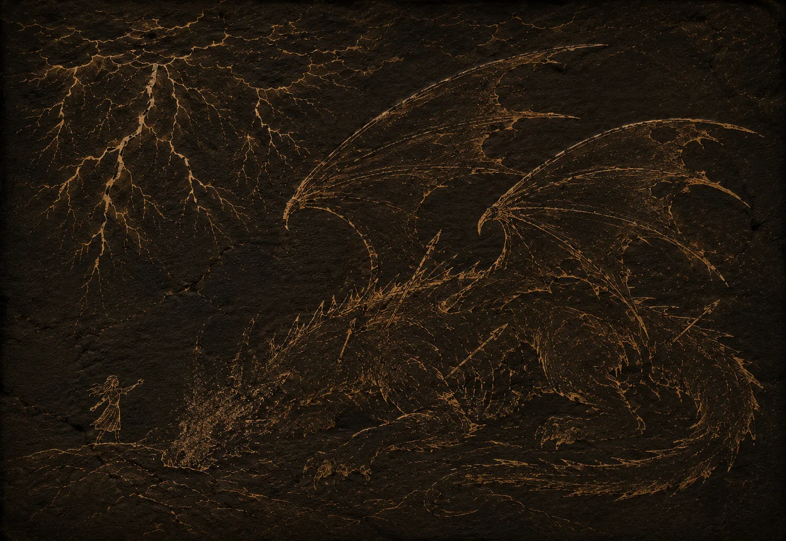
그것은 태초의 절망 — 이형(異形)의 것들이 서로를 뜯어먹던 황무지의 시대였노라.
어느 날 하늘이 찢어지고, 맹수의 형상을 한 신이 추락하였느니.
허나 오직 한 소녀만이, 그 거대한 공포 앞에 발을 딛었노라.
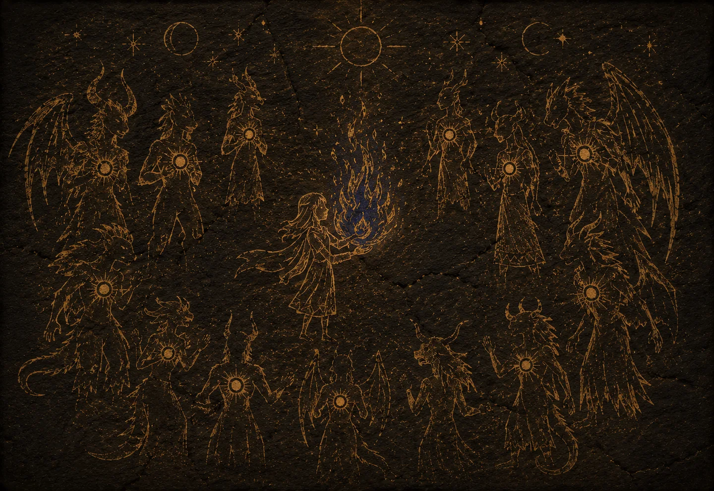
신은 그 온기에 보답하고자, 세 가지 기적을 약속하였도다.
첫 번째 염원 — 이 혹독한 세계에서 살아남을 권능을.
무리에게는 맹렬한 힘이 깃들고, 소녀의 손에는
비를 부르는 불꽃, '하늘의 불꽃'이 내렸으니.
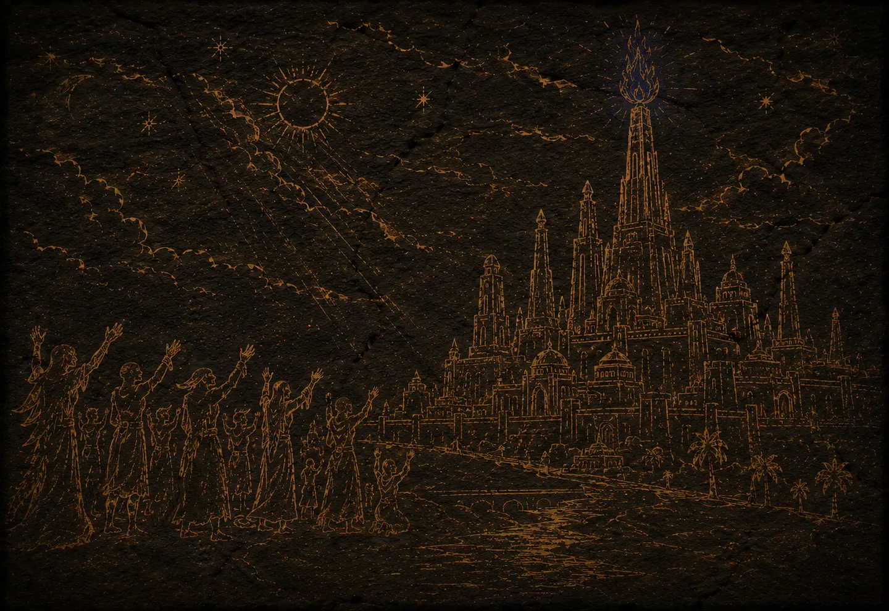
허나 주어진 힘은 불신을 낳고, 이형의 낯은 혐오의 씨앗이 되었음이라.
두 번째 염원 — 추악한 투쟁을 멈출, 부드러운 껍데기를.
신은 그들에게 인간의 외피를 입혀 하나로 묶으셨으니,
마침내 어둠 속에서 유례없는 번영이 피어났노라.
…허나 세 번째 염원이 무엇이었는지는,
그 어떤 신화의 비석에도 새겨지지 않았음이라.
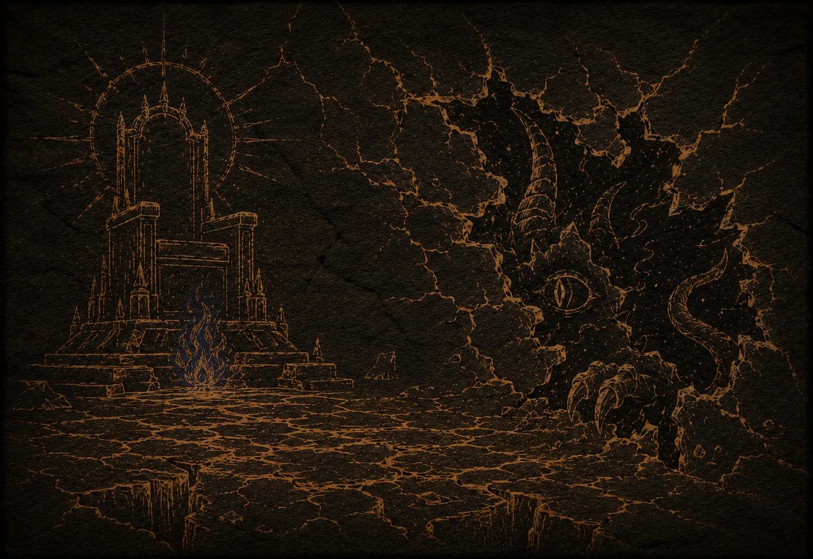
신은 수백 년을 머물다 — 어느 날, 흔적 없이 사라졌도다.
사그라지지 않는 불꽃만을 버려둔 채.
비는 그쳤고 강은 숨을 거두었으니, 대지가 첫 모래숨을 쉬던 그날 세계는 사막이 되었노라.
신성이 흐려지자 거짓된 껍데기에 금이 가고,
괴물과 인간의 육신이 뒤섞인 혼돈이 태어났느니.
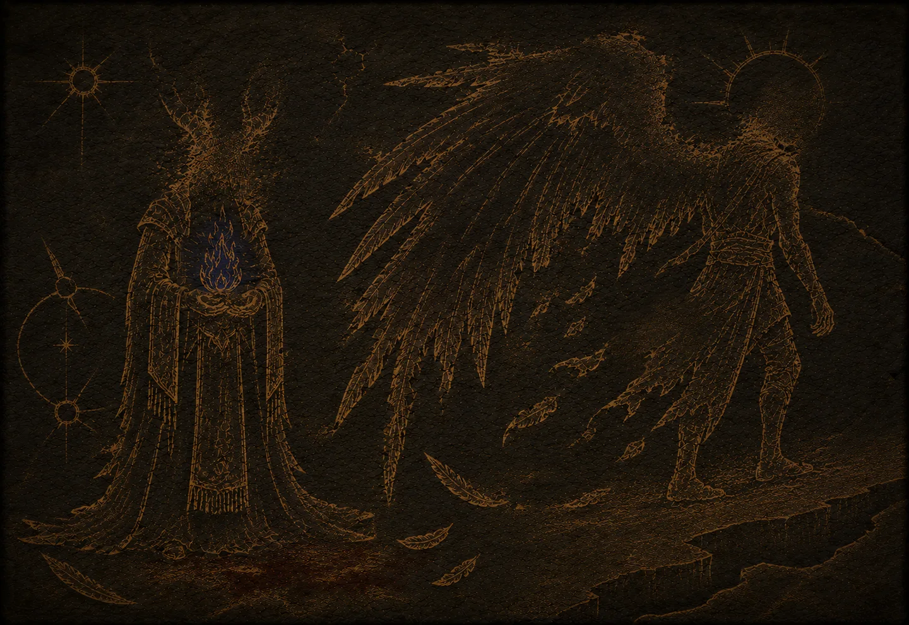
무너져가는 부족을 구하고자, 오랜 지도자와 한 청년이 손을 잡았으나 —
인과란 얼마나 잔혹한가. 구원의 갈망은 핏빛으로 얼룩졌으니.
끝내 결속은 찢어지고, 한 뿌리였던 이들은 서로에게 등을 돌렸노라.
그날의 불꽃은 아직도 침묵 속에서 타오르고 있노라.
03 · Characters
모래의 잔상들
모래 위에 발자국을 남기는 자들. 카드를 선택하면 기록을 열람할 수 있습니다.
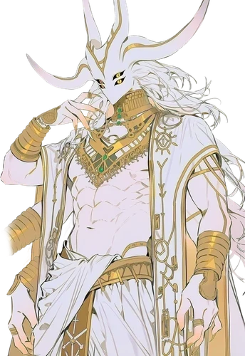
여명의 상속자
안시르
여명의 지도자 · 신의 시대를 기억하는 자
기록 열람 →
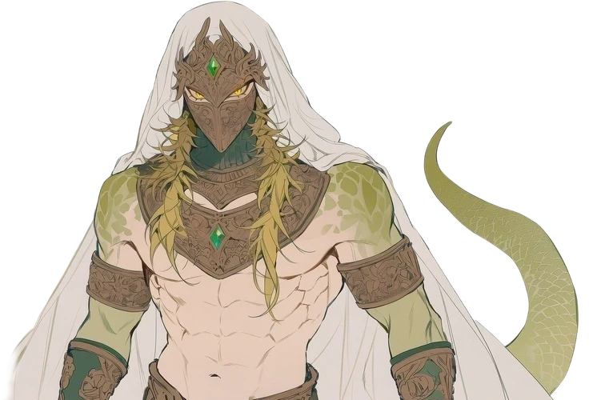
여명의 상속자
자한
여명의 수호자 · 시어의 호위
기록 열람 →
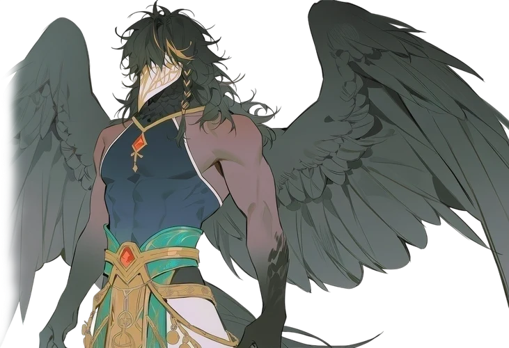
새벽의 발자국
카림
새벽의 지도자 · 검은 날개의 전략가
기록 열람 →
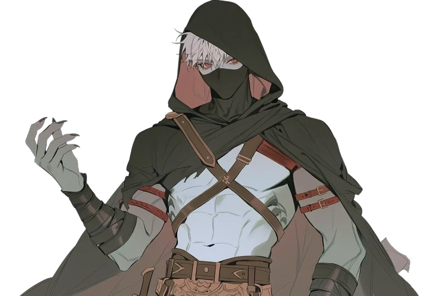
새벽의 발자국
가르반
새벽의 암살자 · 카림의 검
기록 열람 →
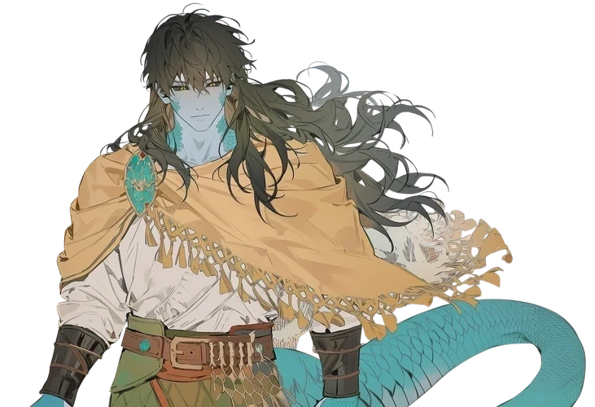
태고족 혼혈
라카샤
용병 · 신을 사냥하는 자
기록 열람 →
04 · Regions
사막의 이정표
모래 바다 위에 흩어진 삶의 좌표들.
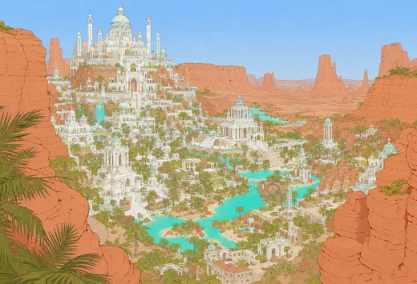
알 자흐 AL ZAHR
사막에서 유일하게 물이 풍족하게 흐르는 도시. 흰 대리석과 유리로 지어진 높고 화려한 건축물이 늘어서 있으며, 중앙에는 신전과 '하늘의 불꽃'이 봉인된 탑이 솟아 있다. 낮 동안 활기차고 질서정연하며 경건한 분위기가 도시를 감싼다. 시어의 희생으로 유지되는 번영의 상징이자, 그 그림자를 품은 곳.
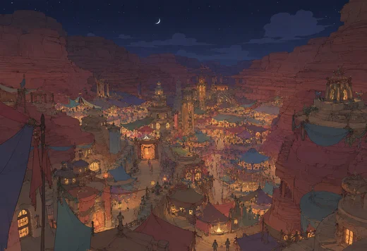
바흐 라 BAHR LAH
거대한 동굴과 절벽을 깎아 만든 석조 건물과 그 사이를 잇는 천막들로 이루어진, 주로 밤에 활기를 띠는 야행성 도시. 색색의 천과 등불이 어두운 협곡을 밝히며, 자유롭지만 어딘가 위태로운 분위기를 자아낸다. 오래된 믿음에서 벗어나 스스로의 힘으로 미래를 개척하려는 자들이 모인 곳.
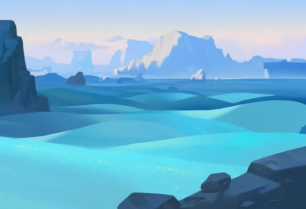
푸른 사막 THE BLUE SANDS
태양빛을 받아 푸르게 빛나는 특이한 모래로 뒤덮인 광활한 지대. 외부인의 출입을 극도로 경계하며 침입자는 가차없이 처단하는 폐쇄적 영역. 인공 건축물 없이 자연 그대로의 지형에 둥지를 틀고 살아가며, 잊혀진 신 '순백의 모래 신'을 숭배하고 고대의 노래와 시를 간직하고 있다.
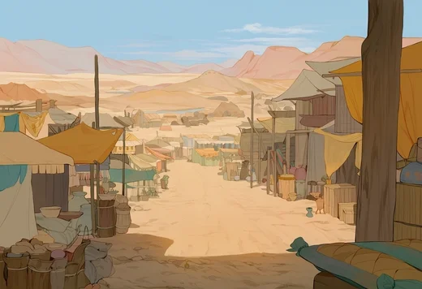
신기루 시장 MIRAGE BAZAAR
어느 부족에도 속하지 않은 자들이 모여 형성한 이동형 시장. 매번 장소가 바뀌어 정해진 위치가 없으며, 이곳에서는 소속과 정체를 숨기고 거래하는 것이 규칙이다. 모든 종류의 싸움이 금지된 유일한 중립 구역으로, 온갖 정보와 물자가 오간다.
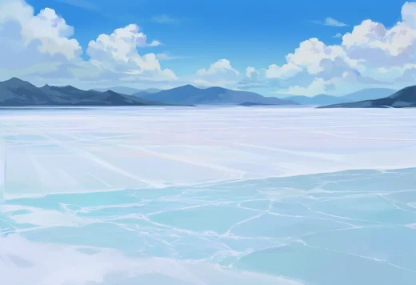
소금 대평원 SALT FLATS
여명의 영토와 태고족의 영역 사이에 펼쳐진 거대한 소금 호수 지대. 하얗게 마른 대지가 지평선까지 이어진다.
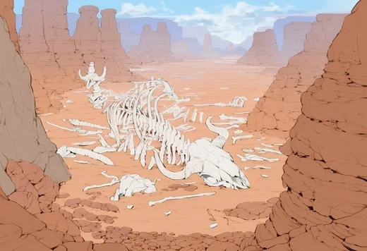
화석 협곡 FOSSIL CANYON
거대 생물들의 뼈와 화석으로 가득한 남쪽의 협곡. 사가의 해를 살았던 거대한 것들의 무덤이 바람에 깎여 드러나 있다.
05 · Beasts
사막의 재앙
도시 밖의 모래는 굶주려 있다. 생환자들의 증언을 모아 복원한 기록.
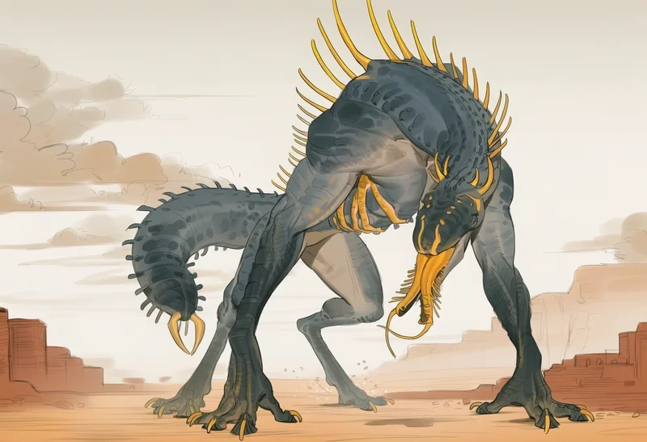
기만적인 야수
거꾸로 기는 것
외형
1.9m의 사족보행체. 긴 팔다리와 청회색 피부, 눈이 없는 미끈한 머리를 지녔다. 지네 더듬이처럼 갈라진 혀가 감각기관 역할을 하며, 지네 머리 형태의 꼬리가 본체다. 등에는 노란 뿔 돌기가 솟아 있다.
번식
근처에 생물이 다가오면 종을 가리지 않고 앞발로 눌러 고정한 뒤, 혀로 상대를 탐색해 몸속 깊은 곳에 산란한다.
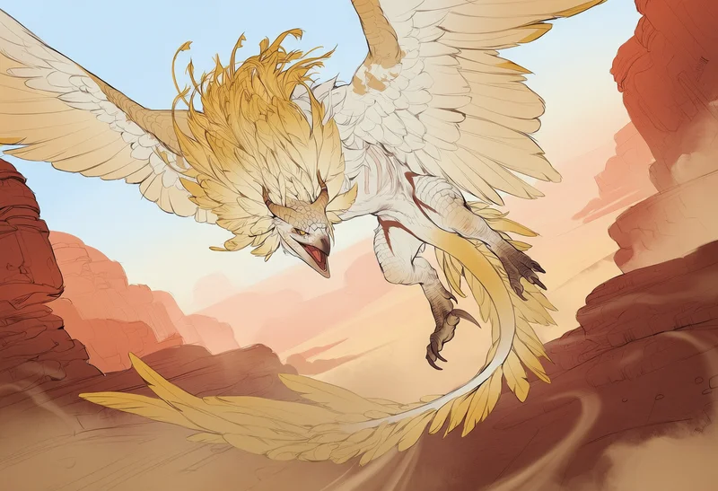
하늘의 제왕
폭풍 갈기
외형
몸길이 3m, 날개폭 7~8m에 달하는 대형 맹금형 야수. 노란 깃털 갈기와 깃털 꼬리, 날카로운 발톱과 뾰족한 부리, 맹금류의 눈을 지녔다.
특징
무리 짓지 않고 홀로 다닌다. 공중이나 협곡 틈에서 순식간에 다가와 발톱으로 우그러뜨려 사냥한다. 강해 보이는 상대는 지칠 때까지 근처에서 지켜보는 끈질김을 보이며, 만만한 상대는 가지고 놀거나 산 채로 둥지까지 잡아가기도 한다.
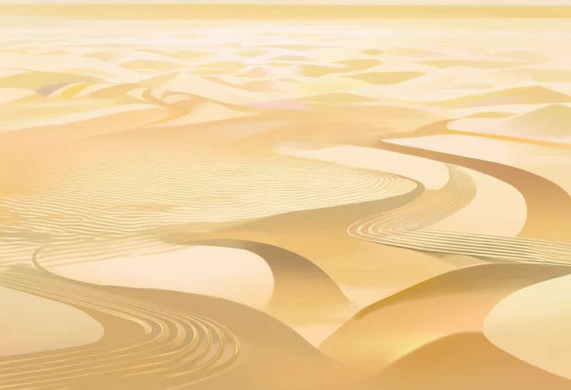
사막의 세이렌
노래하는 모래
외형
모래 위에 여러 결의 선이 빼곡히 그어져 있는 듯한 모습의 지형. 실체가 없어, 만져 보아도 일반 모래와 다르지 않다.
특징
특정 지역에 고정되어 움직이지 않는다. 사막의 시와 노래를 부르는 존재로, 가장 아름다운 목소리로 노래를 부르며 여행자가 그리워하는 것 — 고향, 가족, 연인 — 의 소리를 흉내 내기도 한다. 노래를 한 구절씩 흘려 다가오게 만들고, 유혹에 홀린 희생자를 점점 더 깊은 모래 속이나 구덩이로 유인한다.
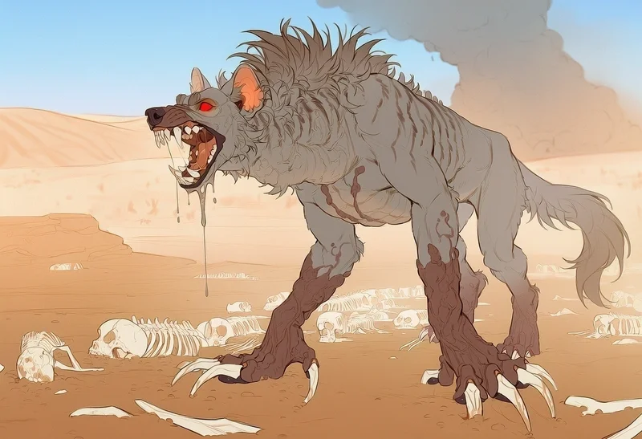
탐욕스러운 청소부
강철 이빨
외형
회색 털과 회색 갈기의 하이에나형 야수. 붉은 눈, 위아래로 크게 벌어지는 턱과 날카로운 이빨, 긴 발톱을 지녔다.
특징
여러 마리가 무리 지어 다니며, 멀리 있는 피 냄새도 알아챈다. 주로 혼자 있는 상대를 노리고, 여럿이거나 강해 보이면 잘 덤비지 않는다. 턱 힘이 매우 강해 뼈를 가볍게 으스러뜨리며, 지나간 자리에는 피나 뼛조각 하나 남지 않는다.
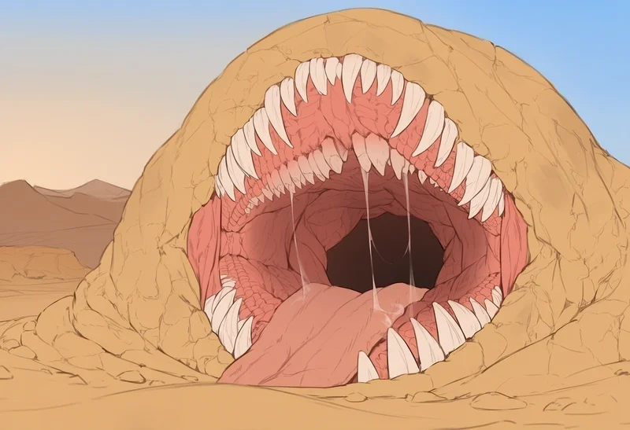
숨어있는 공포
숨 쉬는 바위
외형
커다란 바위나 둔덕의 형태. 때로는 푸른 녹지나 평범한 모래 더미의 모습을 갖추기도 하며, 매우 커다란 입을 지녔다.
특징
이동이 느려, 사냥할 때는 가만히 엎드려 위장한다. 먹이가 가까이 오면 재빨리 입을 벌려 통째로 빨아들인다.
소화
뱃속에 들어온 생물은 쉽게 빠져나가지 못하며, 7일에 걸쳐 천천히 소화된다. 섭취 후 소화가 끝날 때까지 그 자리에서 바위처럼 움직이지 않는다.
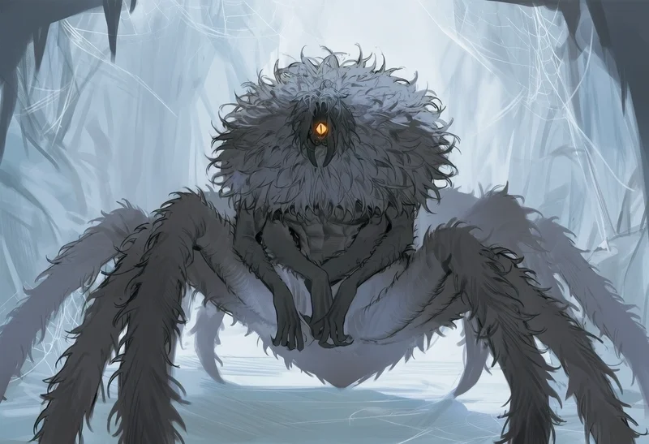
고요한 은둔자
외눈 거미
외형
상체는 인간형, 하체는 거미의 몸. 하나의 눈과 두 쌍의 인간 팔, 커다란 거미 입을 지녔다. 부숭부숭한 검은 털로 뒤덮여 있다.
특징
깊은 굴 속에 서식하며 입구 근처에 함정을 설치해 먹이를 잡는다. 혼종과 비슷한 외형 탓에 자주 착각당하는데, 이는 방심을 부르는 형태로 진화한 결과다.
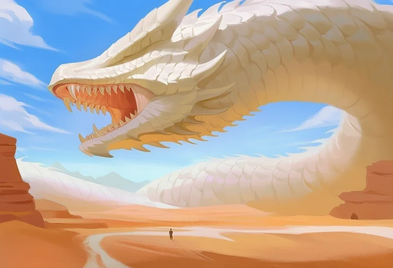
태고족의 신 · 경이로운 대지의 조각
순백의 모래 신
특징
두께 40m, 길이 500m에 달하는, 모래 아래를 기어 다니는 거대한 백사(白蛇) 형태의 야수. 모래와 광물을 섭취하고 백색 모래를 배설해, 지나간 자리에는 흰 모래가 남는다. 아주 단단한 백색 비늘을 지니며, 종종 떨어지는 비늘은 태고족의 무기·방어구·장신구로 쓰인다. 한곳에 머무르지 않고 카르바라 전역을 끊임없이 돌아다닌다.
과거
사가의 해 이전부터 존재했던 야수. 태초부터 모든 야수가 두려워하고 경배했다는 생물체다.
06 · Lore
사막의 기록
모래숨의 시대를 이해하기 위한 고유 명사들.
Hybrids
혼종
동물과 인간의 모습이 섞인 이 사막의 주민들. 도시 밖에서의 생존은 극히 어려우며, 물은 무엇보다 귀하다. 모두가 주기적으로 허물앓이를 겪는다.
Era of Sagas
사가의 해
신이 아직 지상에 머물며 인간, 혼종들과 함께했던 시대를 일컫는 말. 모래숨력이 시작되기 이전의 시대(기원전)를 뜻한다.
Sand-breath
모래숨
① 시간 단위 — 신이 떠나고 사막화가 시작된 해를 '모래숨 1년'으로 삼는 기년법. "대지가 N번 모래숨을 쉬었다"고 표현한다.
② 시어의 수명 — 시어가 앞으로 감당할 수 있는 의식의 횟수, 곧 남은 수명을 비유하는 말이기도 하다.
Celestial Flame
하늘의 불꽃
과거 신이 인간과의 유대를 상징하며 남긴 성물이자, 비를 내리는 힘의 근원. 현재 여명 부족 신전 최상층에 보관되어 있으며, 시어는 이 불꽃을 들이마시는 의식을 통해 비를 내린다.
여명은 이를 신성한 유산으로 보호하고, 새벽은 인류를 낡은 믿음에 옭아매는 족쇄로 여겨 파괴하려 한다.
Seer
시어
'하늘의 불꽃'을 품고 그 숨결로 비를 내리는 존재. 오직 신과 인연을 맺었던 소녀의 혈통만이 시어가 될 수 있다. 의식을 치를 때마다 극심한 고통과 함께 수명이 줄어 대부분 단명한다.
여명에게는 생존을 위한 필수적인 존재이자 가장 귀한 희생양. 신전 가장 깊은 곳에서 외부와 단절된 채 살아간다.
Molting Sickness
허물앓이
혼종들이 주기적으로 겪는 탈피 과정이자 질병. 정상적인 탈피 기간에도 몸이 극도로 쇠약해져 무력화된다.
부전 탈피 — 탈피가 제대로 이루어지지 않으면 굳어버린 껍질이 몸을 으스러뜨리는 작열통과 함께 이성을 잃고 괴물처럼 변해 타인의 체액을 갈망하게 된다. 혼종들에게 가장 큰 공포 중 하나.
Marauders
약탈자
부족에 소속되지 않고 도시 밖 황무지를 떠도는 무법자들. 생존을 위해 다른 이들을 습격하고 목을 물어뜯어 수분(피)을 섭취하는, 잔혹하고 위험한 존재들이다.
Raum
라움
소금 대평원에서 채굴·정제한 눈물 모양의 소금 결정. 갈증을 억제해 주는 생존 도구이자, 사막 전역에서 통용되는 화폐다.